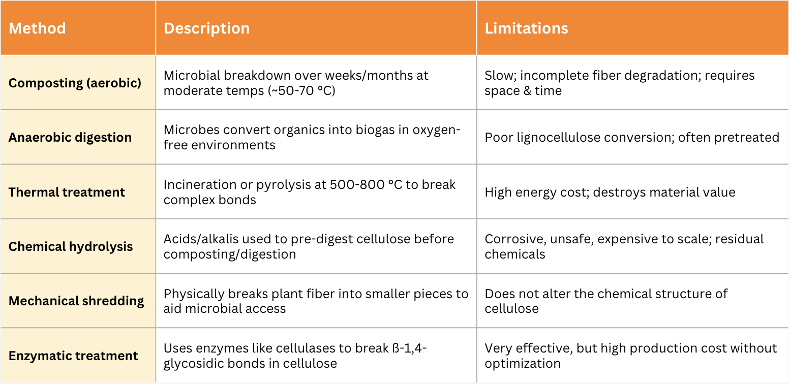
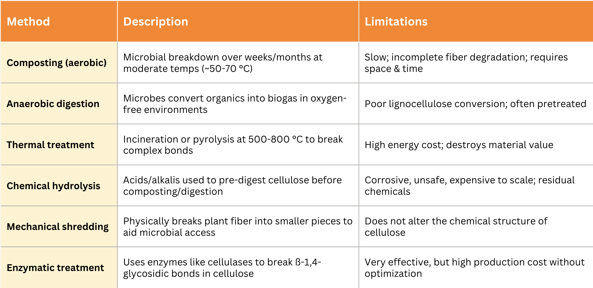

Problem Statement
Food waste, often overlooked as a tiny fragment of human life, has evolved into one of the most
pressing global environmental challenges. It generates about "8-10 percent of annual global
greenhouse gas (GHG) emissions – almost 5 times that of the aviation sector – and significant
biodiversity loss by taking up the equivalent of almost a third of the world's agricultural
land" (UNFCCC, 2024). Beyond waste disposal, emissions accumulate across the entire supply
chain, including production, transportation and eventual decomposition sectors. This full cycle
significantly worsens climate change and magnifies the problem of food waste. In addition, the
U.S. Environmental Protection Agency (EPA) affirms that "over one-third of the food produced in
the United States is never eaten, wasting the resources used to produce it and creating a myriad
of environmental impacts." For instance, the water devoted to crop irrigation simply goes to
waste; the energy used during harvesting and processing never yields benefit. But beyond
environmental impacts, food waste also carries significant economic and biological challenges
that are urgent to address.
Economically, food waste is a major burden. The EPA also reports that the cost of food waste to
American consumers averages about $728 per year and for a household of four, the annual cost is
$2913, which highly contributes to the inefficiency of the economy. According to the research
paper published by Katarzyna Slopiecka, a researcher at the University of Perugia, Department of
Engineering, in 2022, the structured regression line indicates a negative inverse relationship
between national GDP and the composition of organic food waste. This provides insights into
targeting our solution towards varied socioeconomic contexts. Moreover, current solutions are
limited in effectiveness and risk of introducing additional contaminants. There are emerging
issues with food waste management, where a rising concern of food waste recycling contains
levels of plastic and persistent chemical contaminants, including per- and polyfluoroalkyl
substances (PFAS), in food waste streams.
The biological composition of food waste also poses a huge challenge for treatment. It is
primarily made up of carbohydrates (41-62%), proteins (15-25%), and lipids (13-30%), and
carbohydrates are further broken down into cellulose, hemicellulose, lignin, starch, and fiber
(Katarzyna Slopiecka, 2022). These organic components, along with other unbreakable compounds,
make up a significant portion of the total organic compounds in food waste, thus contributing to
the main goal of the team’s project. Those complex polysaccharides, especially cellulose and
lignin, resist enzymatic degradation, which poses a challenge for Black Soldier Fly Larvae
(BSFL) to digest. The insect is polyphagous, which consumes all types of organic materials of
animals and plants (Bava et al., 2019), Diener et al (2011) showed that BSF can be used to
convert municipal waste with a reduction rate ranging from 65.6 to 78.9%. However, the natural
gut microbiota lack the enzymes needed to efficiently break down plant cell walls, which limits
its digestion speed and nutrient extraction from plant-based food wastes. These limitations
raise concerns about current waste management systems (both in Taiwan and globally), therefore
introducing the market gap that our team, LarVase, plans to address.
Waste Management Market
Market Size
Taiwan and the global waste management markets are different in both scale and growth trajectory. Compared to the global market, Taiwan accounts for only a tiny portion of the global market; nevertheless, its projected growth is comparatively faster. Hence, to evaluate Taiwan’s relative position in the global market, the following table shows the key metrics from 2023 to 2030, including market size, growth rate, and segment focus, etc.
Marginal costs of producing supernatant:

Based on the graph, Taiwan contains advanced recycling mechanics, a strong organic focus, and a high CAGR, which makes it an ideal location for LarVase’s enzyme-enhanced fiber degradation solution. The market data indicate that current systems in Taiwan rely on Black Soldier Fly Larvae (BSFL), which is one of the most widely used and efficient methods for converting organic food waste into protein and composts (Circular Taiwan Network, 2025). However, such techniques struggle to process fiber-rich organic wastes such as vegetables, fruit peels, and cellulose-heavy scraps. Within this current biological gap in Taiwan’s highly regulated system, LarVase holds the potential for local deployment and eventual scale-up.
Existing Solutions
Fiber is primarily composed of "complex, non-starch carbohydrates and lignin that are not digestible within the small intestine because mammals do not produce enzymes capable of hydrolyzing them into their constituent monomers" (Turner & Lupton, 2011). As a result, fiber is structurally tough and resistant to degradation. The most common industrial and municipal methods to process fibrous organic waste include:
Current Industrial Methods for Dissolving Fiber

As the graph illustrates, current industrial methods for fiber degradation each come with significant limitations, such as slowness, incompleteness, energy intensity, etc. Notably, none of these methods are efficient and scalable enough for current use in BSFL-based systems, which dominate Taiwan’s food waste management market. Thus, there is a clear unmet need: a lower-cost, biologically compatible solution that allows the breakdown of fibers without changing the existing infrastructure much. Our company, LarVase, fills this gap as we combine synthetic biology with targeted enzyme production, which serves as a scalable pretreatment step that directly enhances BSFL efficiency and addresses a fundamental weakness in the current system.
First Potential Customer
Given the fiber-degradation gap in Taiwan’s BSFL-dominated food waste management system, LarVase’s solution offers unique potential. Specifically, our enzyme solution designed through cost-effective YebF facilitated secretion offers value as a direct biological enhancement. Our initial customers are likely to fall into the following categories:
1. BSFL Farming Companies & Organic Waste Processors
Enterprises such as InnoRs, MonsterEnvironmental, Vertical Insect Farm, and other local BSFL farms processing food waste into animal feed or compost are ideal early adopters. They directly face the challenges of fiber digestion inefficiency and would benefit from a plug-in enzyme solution that improves yield without major infrastructure changes.
2. Municipal Waste Contractors / Public Private Partnerships (PPP)
City-run or contracted composting and recycling facilities under Taiwan’s Environmental Protection Administration (EPA) can adopt LarVase enzymes to improve the efficiency of current organics processing streams, especially in high-volume fiber waste zones (e.g., fruit markets, food courts, agriculture clusters).
3. Zero-Waste or Circular Economy Pilot Zones
Taiwan has several government-backed sustainability initiatives, such as Taipei’s Zero-Waste City program and iTrash smart waste stations. These projects are strong candidates for pilot deployment due to alignment with innovation-driven procurement and clear mandates for improving food waste recycling rates.
4. Animal Feed Manufacturers Using Food Waste Inputs
Enzymatically enhanced BSFL waste conversion can increase nutritional extraction and larval biomass, offering potential value for livestock feed producers looking to use insect-derived proteins.